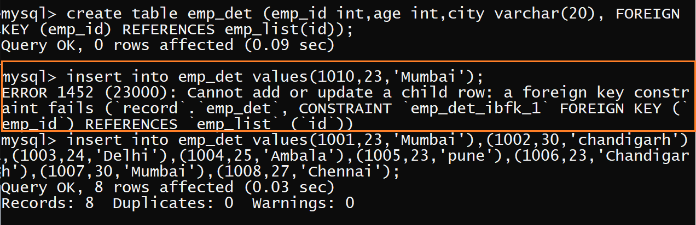

Foreign key:The foreign key is known as Refrential intigrity constraints. It maintance the integrity of the
data by checking the refrence of the data from the primary key data. It establishes a relationship between two tables
. For a column to be defined as foreign key, it should be a defined as a primary key in the table which it is referring. One
or more columns can be defined as foreign key. Foreign key constraints can be defined at the column- level or table- level.
the table on which we have a primary key is known as parent table,master table, primary table.
The table on which we have a foreign key is known as child table, slave table, secondary table.
It in the master table we are having two columns on which primary key is applied there in the slave table their should be two
columns which are refrences to the master table column.
A table can have multiple foreign keys.
The columns of the master table and the slave table datatype should be same(column name can be different ).
create table table_name
( column_name1 datatype FOREIGN KEY REFERENCES table2(column1) , column_name2 datatype,.....);
create table table_name
(column_name1 datatype , column_name2 datatype,.....,FOREIGN KEY(column_name1) REFERENCES table2(column1));
The selected area show if we can enter another data which is not exists in the parent table the error will be show.
